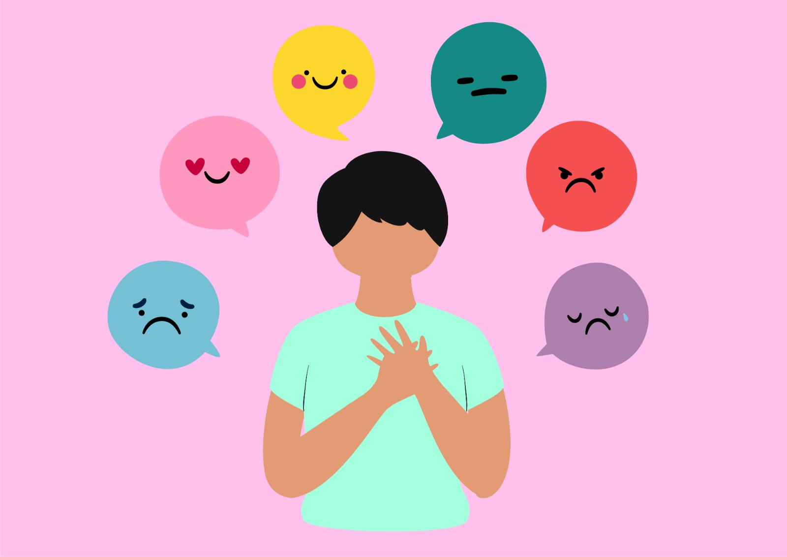

.png)
¿QUÉ ES SUPPORT SOUNDS?
Es un proyecto en el cual nos interesa la salud emocional de los estudiantes, ya que estos suelen reprimir sus emociones o sentimientos por el miedo al que dirán.
Somos estudiantes de La Institución Educativa La Independencia y hemos pasado por ese temor de hablar con un profesional para que nos oriente con nuestras inquietudes y problemas. Así como nosotros pasamos por eso, sabemos que hay muchos otros estudiantes que están pasando por lo mismo y se quedan callados sin pedir ayuda.
Este proyecto tiene como propósito, el orientar a los estudiantes de décimo y undécimo de La Institución Educativa La Independencia a que se abran y puedan expresarse con confianza.
Misión
Somos estudiantes de La Institución Educativa La Independencia y buscamos fortalecer la confianza y conocimiento en los jóvenes sobre temas relacionados con las emociones y el manejo de estas mismas.
.jpg)
Visión
Deseamos transmitir una imagen de apoyo sin discriminación, donde las personas no sean juzgadas y puedan mostrarse y sentirse tal cual como son, para esto, queremos a lo largo del proyecto desarrollar entrevistas para estar al tanto de cuál es la mayor problemática.

Tipos de emociones del ser humano
- Miedo: sentimiento de riesgo o advertencia que crea inseguridades, angustia y ansiedad.
- Sorpresa: sentimiento de espanto o susto, alteración o sorpresivo que puede ser fugaz o pasajera.
- Asco o aversión: sentimiento de desagrado, repugnancia o inclusive tomamos la actitud de mantener distancia del objeto o persona.
- Ira: sentimiento de irritación, enfado, rencor y enojo.
- Alegría: sentimiento de felicidad, encantador y gratificante.
- Tristeza: sentimiento de dolor, sufrimiento, angustia y desaliento.

Las emociones que vimos anteriormente tienen una duración muy fugaz, sin embargo, pueden extenderse algunos minutos, y se puede notar el cambio en las pequeñas expresiones a partir de los músculos faciales y que probablemente ya te habrás dado cuenta.
Las demás emociones subyacentes (secundarias) o que podemos notar por otros eventos socioculturales de forma posterior; este experto en psicología explicó que estas son derivadas de las emociones principales, pero son dependientes de la cantidad de conocimientos en el origen de una cultura o educación adquirida en casa,como son:
- Orgullo:Sentimiento de satisfacción por los logros, capacidades o méritos propios o por algo en lo que una persona se siente concernida.
- Culpa:Imputación a alguien de una determinada acción como consecuencia de su conducta.
- Verguenza:Turbación del ánimo causada por timidez o encogimiento y que frecuentemente supone un freno para actuar o expresarse.
- Alivio:es una emoción positiva que se siente cuando algo desagradable o doloroso se termina o no llega a suceder. El alivio a menudo se acompaña de un suspiro, el cual marca la transición emocional. En todo el mundo la gente reconoce los suspiros de alivio y lo consideran una emoción fundamental.
- Celos:Los celos son una respuesta a una ruptura del equilibrio emocional que surge cuando una persona percibe la amenaza o siente la posibilidad de pérdida, hacia algo que considera propio.
- Desprecio:es una intensa sensación de falta de respeto o reconocimiento y aversión. El desprecio supone la negación y humillación del otro de quien pone en duda su capacidad e integridad moral. Es similar al odio, pero implica un sentimiento de superioridad.

.png)